เครื่องมือกลุ่มช่างไฟฟ้า — 46 รายการ
คีมตัด-ปอก-ย้ำสายไฟ Electrician's Shears & Cable Cutters 6 รายการ
วัสดุ: CR-V / SK-5 เหล็กสปริง
| รูป | รหัส | ชื่อสินค้า | ขนาด | จำนวน/ลัง | วัสดุ |
|---|---|---|---|---|---|
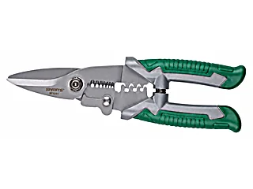 |
W1051 | คีมตัด-ปอก-ย้ำสายไฟMulti-Purpose Electrician's Shears ปอกสาย AWG 10-22 · ตัดสายไฟ 5.5/3.5/2/1.25/0.8/0.5/0.32 ตร.มม. · ย้ำสายไฟ 0.5-2.0 ตร.มม. · แข็งระดับ HRC55 |
8"/200mm | 10/90 | |
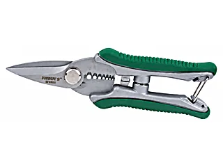 |
W1052 | คีมตัด-ปอกสายไฟMulti-Purpose Electrician's Shears ปอกสาย AWG 10-22 · ตัดสายไฟ 6/4/2.5/1.5/1/0.5/0.3 ตร.มม. |
6"/150mm | 15/120 | |
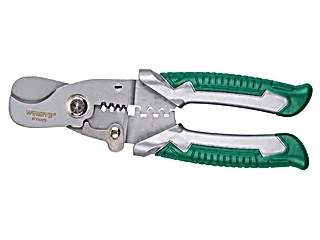 |
W1053 | คีมตัดเคเบิล-ปอก-ย้ำสายไฟMultifunction Cable Shears ปอกสาย AWG 12-18 · ตัดเคเบิลได้ถึง 16 มม. · ย้ำสายไฟ 0.5-2.0 ตร.มม. |
7"/175mm | 15/120 | |
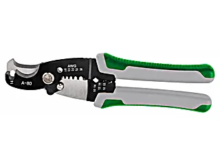 |
WS1055 | คีมตัด-ปอก-ย้ำสายไฟและเคเบิลMulti-Function Cable Cutter ปอกสาย 16 ตร.มม. · ปอกสาย 16-8AWG · ช่วงย้ำสายไฟ 16-18, 20-22, 22-26, 10-14 |
CR-V | ||
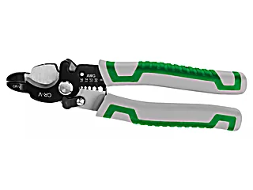 |
WS1056 | คีมตัด-ปอกสายเคเบิลMulti-Function Cable Cutter ตัดสายลวดเหล็กได้ · ปอกสาย 16-8AWG · ล็อคได้ |
CR-V | ||
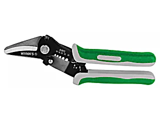 |
WS1057 | คีมตัด-ปอก-ย้ำสายไฟปากโค้งMulti-Function Curved Nose Electric Cutter ตัดแผ่นอลูมิเนียม สังกะสี เหล็กบาง สแตนเลสบาง · ปอกสาย 16-8 AWG |
SK-5 เหล็กสปริง |
คีมปอกสายไฟ Wire Strippers 7 รายการ
วัสดุ: Z-ALLOY / เหล็กอัลลอย
| รูป | รหัส | ชื่อสินค้า | ขนาด | จำนวน/ลัง | วัสดุ |
|---|---|---|---|---|---|
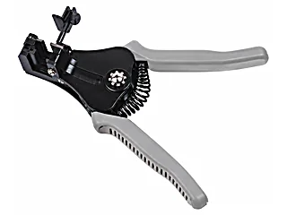 |
W3366A | คีมปอกสายไฟอัตโนมัติAutomatic Wire Strippers ปอกได้ 0.5/1.2/1.6/2.0 ตร.มม. (AWG24/16/14/12) · มีตัวล็อคระยะปอก |
170mm | 6/48 | Z-ALLOY |
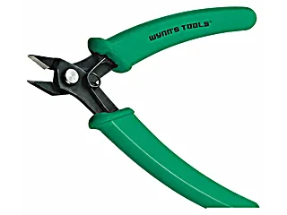 |
WNS205A | คีมตัดสายไฟปากเฉียงElectrical Diagonal Pliers | 5"/125mm | 20/160 | เหล็กอัลลอย |
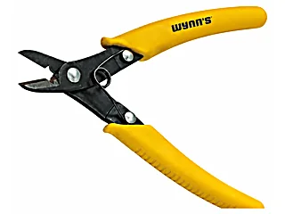 |
W0249 | คีมตัด-ปอกสายไฟปากเฉียงElectronics Black Wire Strippers มีร่องปอกสายไฟขนาด 2 ตร.มม. หรือเล็กกว่า |
6/60 | เหล็กอัลลอย | |
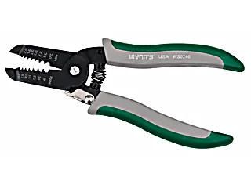 |
WS0246 | คีมปอกสายไฟBlack Wire Strippers ปอกได้ 0.8/1/1.2/1.6/2/2.6/3.2 ตร.มม. (AWG20/18/16/14/12/10/8) |
180mm | 15/90 | เหล็กอัลลอย |
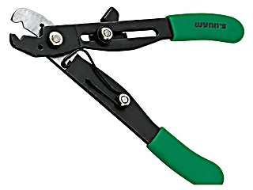 |
WS2502 | คีมปอกสายไฟBlack Wire Stripper ปอกได้ AWG 22-10 หรือ 0.65-2.6 ตร.มม. · มีที่ปรับขนาดสายที่จะปอก |
130mm | 10/160 | เหล็กอัลลอย |
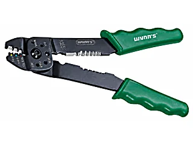 |
WS2203 | 5in1 คีมย้ำปอกตัดอเนกประสงค์Black Wire Stripper 5-in-1 ปอกสาย 0.5-5.0 ตร.มม. · ย้ำหางปลา 0.5-5.0 ตร.มม. · ตัดน็อต M2.6 M3 M3.5 M4 M5 |
225mm | 12/108 | เหล็กอัลลอย |
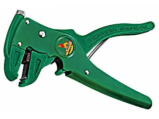 |
W01A | คีมปอกสายไฟอัตโนมัติ แบบปากเป็ดWire Stripper Cutting ปอกสายไฟ 0.8 ถึง 4 ตร.มม. · ปรับความแรงในการปอกได้ · ปอกได้ทั้งสาย |
170mm | 10/60 | เหล็กอัลลอย |
คีมย้ำหางปลา และคีมเข้าสายแลน Crimping & Modular Plug Tools 12 รายการ
วัสดุ: SK-55 / CR-V / เหล็กอัลลอย
| รูป | รหัส | ชื่อสินค้า | ขนาด | จำนวน/ลัง | วัสดุ |
|---|---|---|---|---|---|
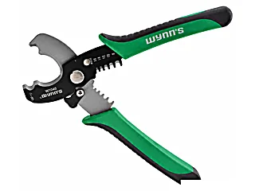 |
W1040 | คีมตัด-ปอกสายไฟMulti-Functional Cable Cutter ร่องฟันปอกสายไฟ 16 ตร.มม. · ร่องปอก 1.3/2.0/3.3/5.26/8.36/16 ตร.มม. · ตัดท่อ PVC/PPR ได้ |
12/96 | CR-V | |
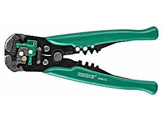 |
W0475 | คีมปอกสายไฟอัตโนมัติAutomatic Wire Strippers ปากคีม HRC52-57 ปากตัด HRC45-55 · ย้ำหางปลาเปลือย 8-22AWG · ย้ำหางปลาหุ้ม 10-22AWG · ย้ำหางปลารถยนต์ 7-8 มม. |
205mm | 10/60 | เหล็กอัลลอย |
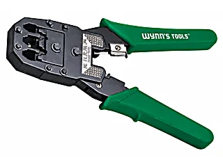 |
W0283 | คีมเข้าสายแลน-โทรศัพท์Modular Plug Crimping Tool ใช้ได้กับ 4P4C&4P2C, 6P6C/RJ-12, 6P4C/RJ-11&6P2C, 8P8C/RJ-45, 8P6C, 8P4C&8P2C |
8" (200mm) | 12/48 | SK-55 |
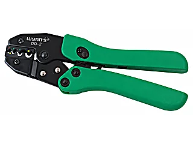 |
DD-2 | คีมย้ำหางปลา (ระบบล้อเฟือง)Ratchet Cold-Pressed Terminal Clamp (Industrial Level) | 0.5 / 1 / 2.5 / 4 / 6 / 10 ตร.มม. | 6/36 | เหล็กอัลลอย |
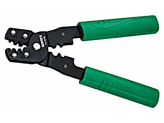 |
YG-202B | คีมย้ำCold Press Pliers ย้ำ AWG 26-28/22-26/20-22/22-23/14-18/10-14/16-18 |
185mm | 10/90 | SK-55 |
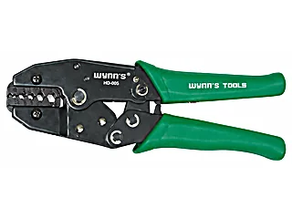 |
HD-005 | คีมย้ำหางปลาCold Press Pliers เหมาะสำหรับ 0.5-10 ตร.มม. · มีที่ปรับแรงย้ำ เปลี่ยนหัวย้ำได้ |
255mm | 6/36 | SK-55 |
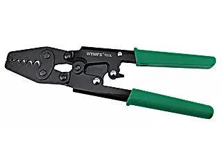 |
HD-6L | คีมย้ำหางปลา 6LCrimping Pliers เหมาะสำหรับ 0.5/1/1.5/2.5/4/6 ตร.มม. |
6/60 | SK-55 | |
 |
HD-8L | คีมย้ำหางปลา 8LCrimping Pliers เหมาะสำหรับ 1.25-1.5/2.0-5.5/6-8 ตร.มม. |
300mm | 6/36 | SK-55 |
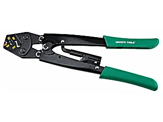 |
HD-16L | คีมย้ำหางปลา 16LCrimping Pliers เหมาะสำหรับย้ำ 1.25-1.5/2-2.5/5.5-6/8-10/14-16 ตร.มม. |
6/36 | SK-55 | |
 |
HD-25LA | คีมย้ำหางปลา 25L อย่างดีCrimping Pliers รุ่นอัพเกรดจากรุ่น B มีเกียร์และสปริงวัสดุดีกว่า · ย้ำ 5.5-6/8-10/14-16/22-25 ตร.มม. |
350mm | 20 | SK-55 |
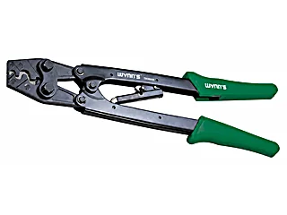 |
HD-25LB | คีมย้ำหางปลา 25LCrimping Pliers ย้ำ 5.5-6/8-10/14-16/22-25 ตร.มม. |
350mm | 20 | SK-55 |
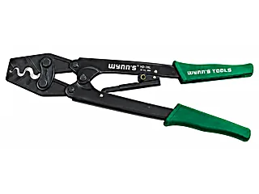 |
HD-38L | คีมย้ำหางปลา 38LCrimping Pliers ย้ำ 5.5/8/14/22/38 ตร.มม. |
365mm | 20 | SK-55 |
ปืนเป่าลมร้อน ปืนกาว และอุปกรณ์บัดกรี Heat Guns, Glue Guns & Soldering 10 รายการ
| รูป | รหัส | ชื่อสินค้า | ขนาด | จำนวน/ลัง | วัสดุ |
|---|---|---|---|---|---|
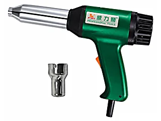 |
W3389B | ปืนเชื่อมพลาสติก PVC 700WPlastic Welding Torch เหมาะงานเชื่อม งานตกแต่ง รวมศูนย์ความร้อนเพื่อละลายวัตถุได้ |
700W | 10 | |
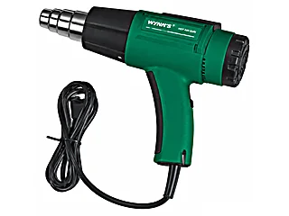 |
W0337 | ปืนเป่าลมร้อนHot Air Gun ลอกสี หดฟิล์ม ดัดงอพลาสติก ปรับได้ 2 ระดับ |
1600W/8A | 6/24 | |
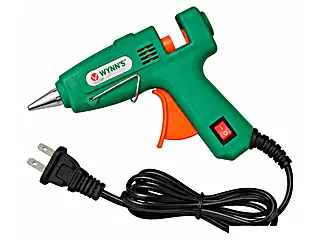 |
W0338D | ปืนยิงกาวHot Melt Glue Gun ยิงกาวออกมาได้เร็ว เสมอ อายุการใช้งานนาน |
25W | 24/96 | |
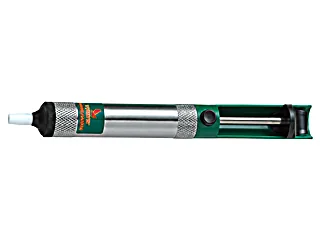 |
W0617 | ที่ดูดตะกั่วTin Suction Pump หัวดูดวัสดุ PTFE ทนความร้อนสูง ไม่ละลาย ดูดได้หมดเกลี้ยง |
30/600 | ||
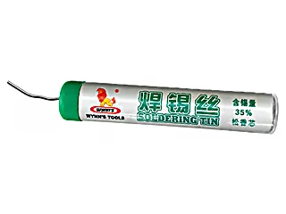 |
W3089 | ตะกั่วบัดกรีSoldering Tin ตะกั่วผสมดีบุก 35% Flux 2% ทำบัดกรีง่าย |
1.0mm 17g | 125/1000 | |
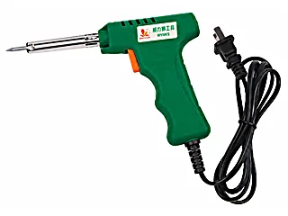 |
W2803 | หัวแร้งบัดกรีแบบปืนElectric Soldering Iron ความร้อนเพิ่มขึ้นเร็ว บัดกรีได้ใน 1 นาที · ใช้ไกเปลี่ยนระบบจาก 20W เป็น 40W |
20W-40W | 12/48 | |
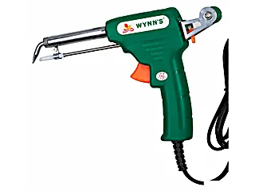 |
W3104 | หัวแร้งบัดกรีแบบปืน ป้อนตะกั่วอัตโนมัติManual Soldering Gun ใส่โลหะบัดกรีเส้นผ่านศูนย์กลาง 0.8-2.3 มม. ได้ |
60W | 12/36 | |
 |
W0300A | หัวแร้งบัดกรีExternal Heating Electric Soldering Iron เปลี่ยนชุดทำความร้อนได้ง่าย · ด้ามจับ PBT ระบายความร้อนเร็วกว่าพลาสติกอื่น 3-5 เท่า |
30W | 8/96 | |
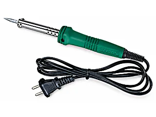 |
W0300B | หัวแร้งบัดกรีExternal Heating Electric Soldering Iron | 40W | 8/96 | |
 |
W0300C | หัวแร้งบัดกรีExternal Heating Electric Soldering Iron | 60W | 8/96 |
เครื่องมือวัดไฟฟ้า และอุปกรณ์ช่างไฟ Meters, Testers & Electrician's Knives 11 รายการ
วัสดุ: CR-V
| รูป | รหัส | ชื่อสินค้า | ขนาด | จำนวน/ลัง | วัสดุ |
|---|---|---|---|---|---|
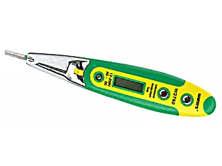 |
WS0413 | ไขควงลองไฟฟ้าดิจิตอลDigital Voltage Tester ใช้กับวงจรไฟฟ้าตั้งแต่ 12-250V · ได้ทั้งกระแสสลับและกระแสตรง · แสดงด้วย LED มองเห็นกลางคืนได้ |
12/240 | CR-V | |
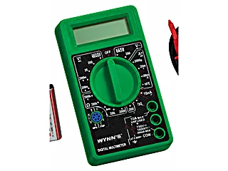 |
W0453 | มิเตอร์ดิจิตอลDigital Multi-Meter จอ LCD 3½ หลัก แสดงค่าได้สูงสุด 1999 · ป้องกันไฟฟ้ากระแสเกิน |
สูงสุด 1000V/750V | 6/72 | |
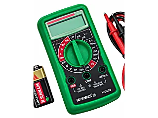 |
W0452 | มิเตอร์ดิจิตอลDigital Multi-Meter จอ LCD 3½ หลัก แสดงค่าได้สูงสุด 1999 |
สูงสุด 600V/600V | 6/72 | |
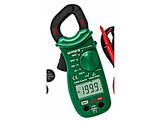 |
W0647 | แคลมป์มิเตอร์ดิจิตอลDigital Clamp Multi-Meter คล้องสายไฟอ่านค่าได้ทันที · ใช้ถ่านกระดุมลิเธียม CR2032 3V 3 ก้อน |
6/72 | ||
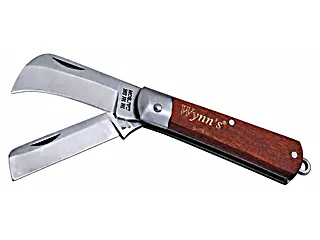 |
WS90 | มีดพับไม้ 2 ใบมีดTwo-Way Electrician's Knife ใบมีดเหล็กชนิดพิเศษ คม ทนทาน ไม่เป็นสนิม · ด้ามไม้ฮอกกานี |
200mm | 12/108 | |
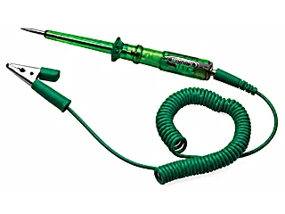 |
W0226 | ปากกาเทสวงจรรถยนต์Automotive Circuit Tester | 6V-12V-24V | 10/120 | |
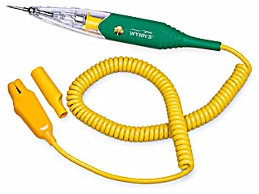 |
W0226B | ปากกาเทสวงจรรถยนต์อย่างดีHigh-Grade Automotive Circuit Tester ไดโอดอย่างดี ไม่เกิดความร้อนตอนใช้งาน · ปลายสายเป็นตัวหนีบปากจระเข้ เปลี่ยนได้ |
12-24V | 6/36 | |
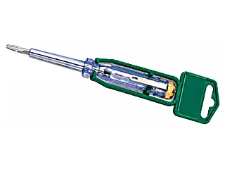 |
W0183 | ไขควงลองไฟTester ด้ามท่อหุ้มพลาสติกจากไต้หวัน ไม่แตกหัก แสงไฟผ่านได้ · ทดลองใช้ 3 หมื่นครั้งยังคงใช้ได้ดี |
24/480 | CR-V | |
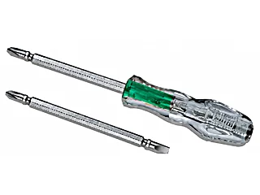 |
W0225B | ไขควงลองไฟสลับTester วงจรไฟฟ้า 12V-240V ทดสอบได้ทั้งกระแสสลับและตรง · ด้ามจับ ABS |
H6X100mm Ø5.0-PH1 | 24/240 | CR-V |
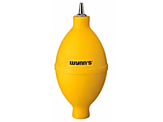 |
W0360A | ลูกยางเป่าฝุ่นRubber Dust Blower หัวพ่นเหล็กไม่กร่อน ยางนุ่มมือ · วาล์วลมเข้าจากด้านหลัง |
100 | ||
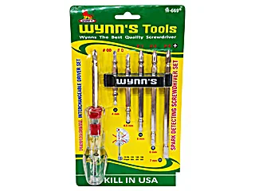 |
W669 | ชุดไขควงลองไฟสลับ (ชุดเปลี่ยนหัวได้)Spark Detecting Screwdriver Set วงจรไฟฟ้า DC 100-250V / AC 100-350V · หัวแฉก #00, 0, 1, 2, 3 · หัวแบน 4, 4.5, 5, 6, 7 มม. |
แกน 79/99/119/139/159mm · ด้าม 105mm | CR-V |
เจอรหัสที่ต้องการแล้ว? กดที่รหัสเพื่อถามราคา
กดที่รหัสสินค้าในตาราง ระบบจะเปิด LINE พร้อมข้อความให้แล้ว หรือทักมาบอกรายการที่ต้องการก็ได้ ทีมงานเช็คสต็อกและแจ้งราคาส่งให้